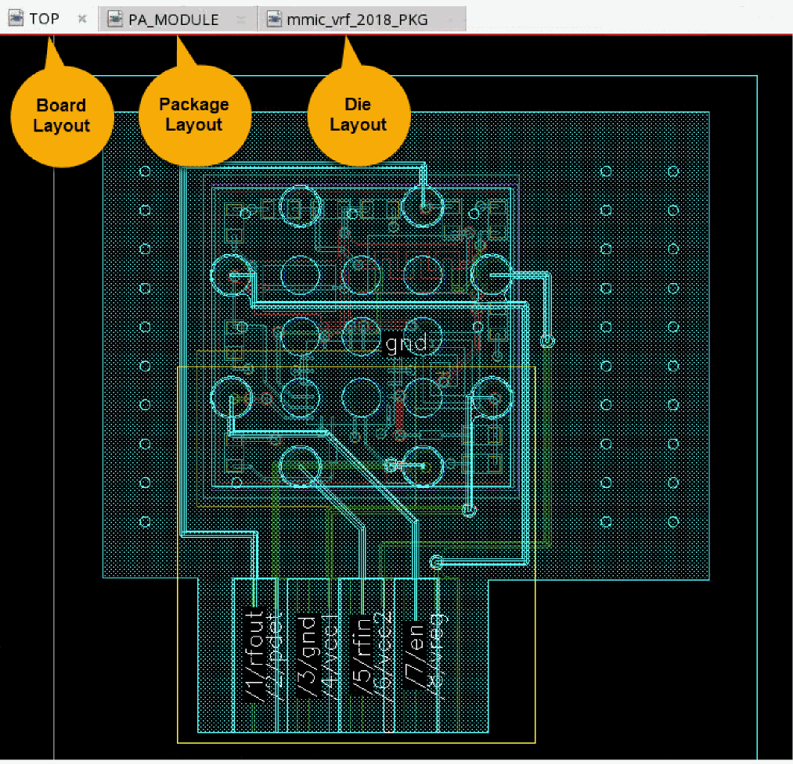

Launch Edit-in-Concert Mode
Edit-in-Concert mode can be launched from package, module, and board layouts. To switch to Edit-in-Concert mode, with a package or board die open, choose Module – Edit-in-Concert. The package and die layouts associated with the die footprint instances in the board or package die are displayed on subsequent tabs.
In the following example, the given package die includes two TILPs, LNA and PA. In Edit-in-Concert mode, the package die layout is displayed on the first tab and the die layouts for the two TILPs are displayed on separate tabs.
Here is zoomed-in image of the above design, which shows the package die in the foreground (editable) and the die layout corresponding to the TILP in the background (not editable). The zoom settings are propagated across the dies open in Edit-in-Concert mode.
In Edit-in-Concert mode, the display levels of the background dies on the package tab is determined by the display levels of the die layout cellviews on their respective tabs.
Similarly, on each die tab, the package cellview in the background has the same view level as set in the package cellview window. You can control different view levels for different dies in the background in the package tab. Also, you can view the complete hierarchy of the package cellview without opening the complete hierarchy of the die layout cellviews in Edit-in-Concert mode.
Launch Edit-in-Concert from Board Layout
To open Edit-in-Concert mode from a board layout, with the board layout open, choose Module – Edit-in-Concert.
- The board design is displayed on the first tab and it contains the package TILP.
- The second tab contains the package layout corresponding to the TILP in the board. This tab also contains the TILPS corresponding to die layouts.
-
The third tab contains the IC die layout corresponding to the TILP in package layout, which is displayed on the second tab.

Edit-in-Concert mode supports packages with multiple instances of the same die that are bound to the same layout and die footprint. The die selected before launching Edit-in-Concert is considered the active die and is displayed on a separate tab in Edit-in-Concert mode. The changes made to this die are automatically propagated to other instances of the die. The updates made by the LVA fixer are also propagated to the remaining dies.
In addition to single packages, Edit-in-Concert supports package-on-package designs, where there can be more than one package TILP in a module or board layout.
Edit-in-Concert mode does not support die instances that are bound to the same layout but have different die footprints.
Related Topics
Return to top